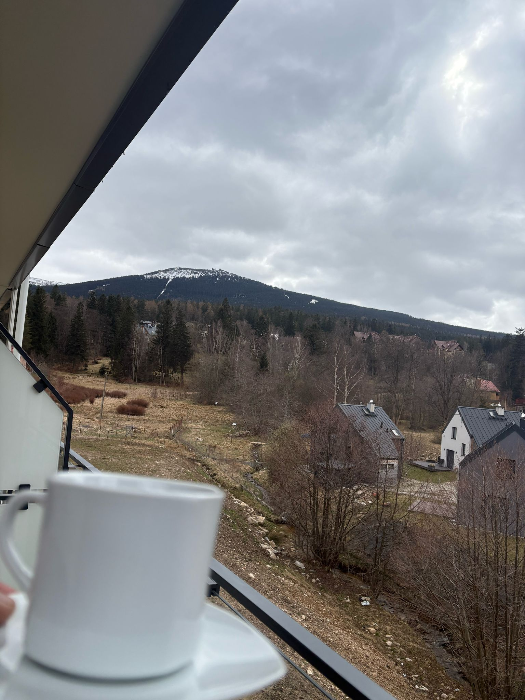
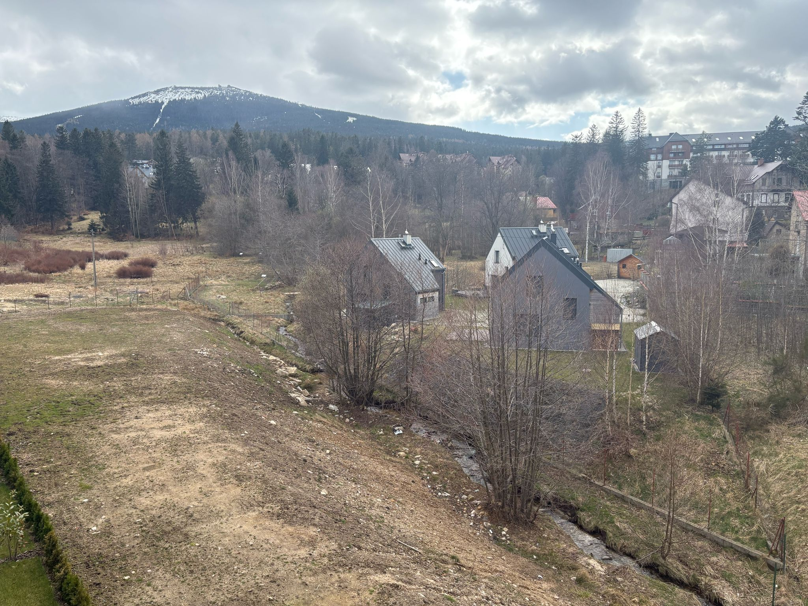
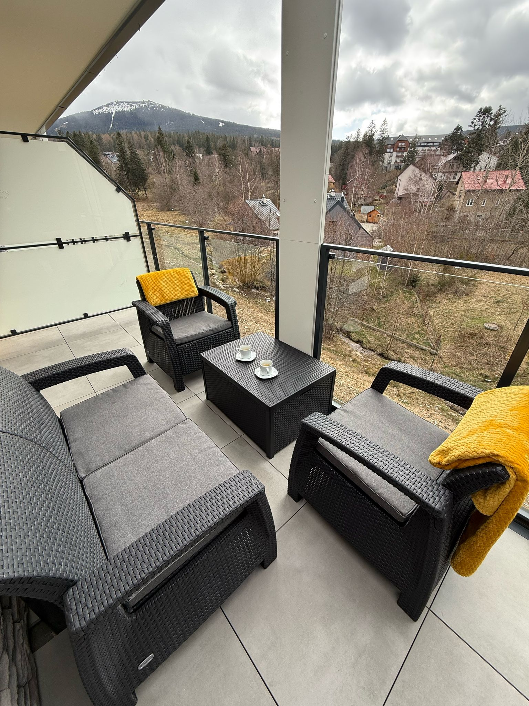
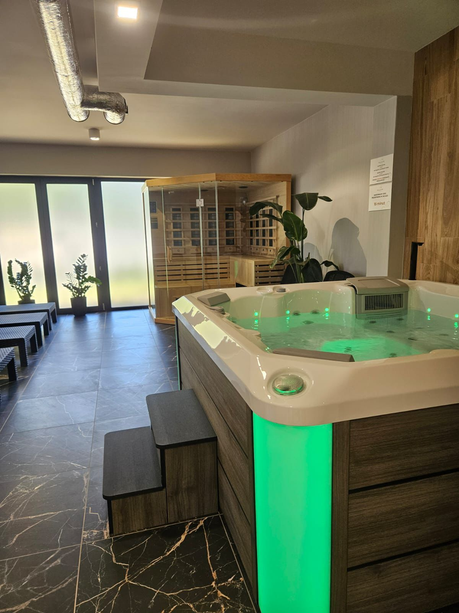
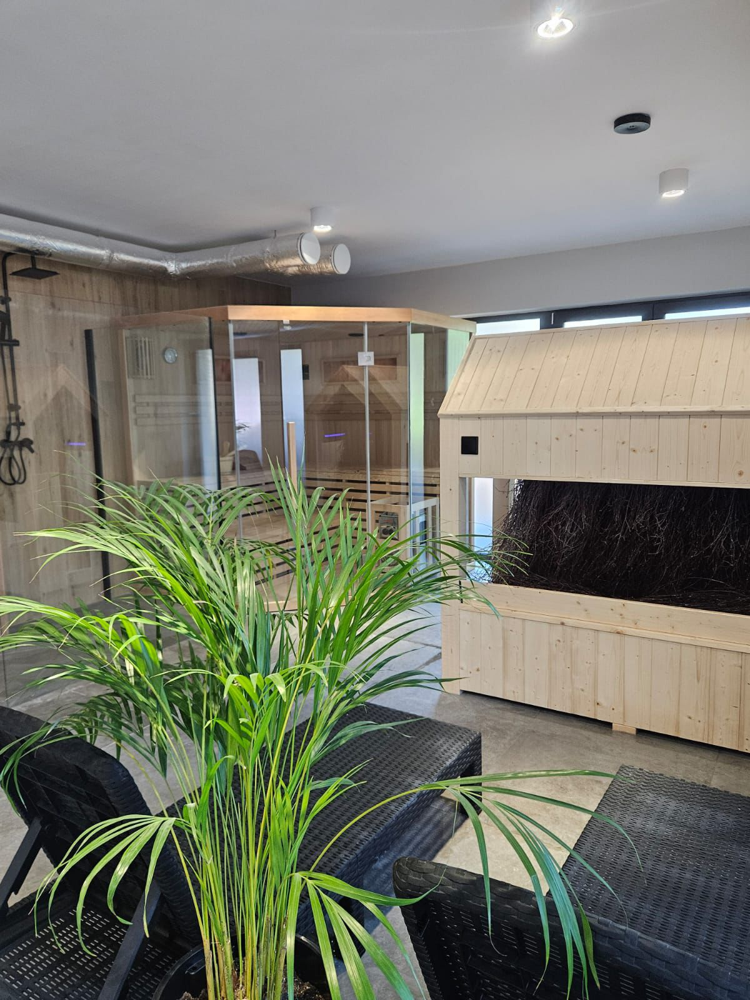
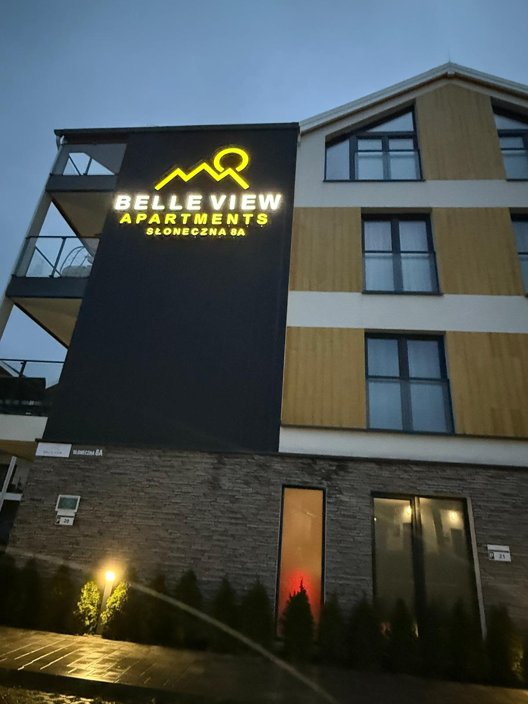
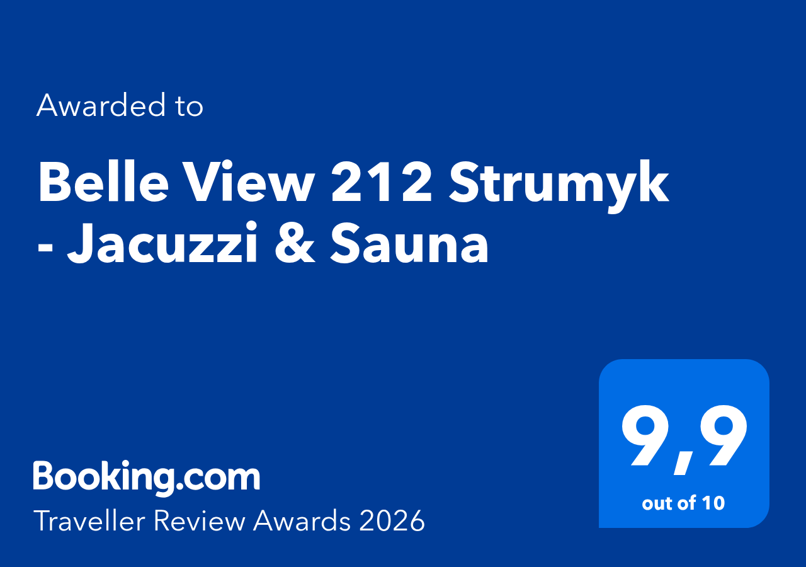

Karkonosze widoczne z balkonu i apartamentu.

Szklarska Poręba · Belle View Apartments
Blisko centrum.
Jeszcze bliżej natury.
Widok na Karkonosze. Szum strumyka. Spokój.
9,9Booking.com
Traveller Review Awards 2026
Traveller Review Awards 2026
Są miejsca, które zapamiętuje się oczami.
To zapamiętasz również uszami.

Dlaczego „Strumyk”?
Centrum miasta po jednej stronie. Natura po drugiej.
Z balkonu rozciąga się widok na Karkonosze, a poniżej płynie strumyk, którego szum słychać podczas porannej kawy i spokojnych wieczorów.
Do centrum Szklarskiej Poręby dojdziesz w kilka minut. Mimo tej bliskości przy strumyku można czasem zobaczyć sarny. Właśnie ten kontrast nadał apartamentowi jego nazwę.
Belle View 212 Strumyk
Nowoczesna przestrzeń zaprojektowana do odpoczynku
4gości
39m²
2.piętro
350m od centrum

Najlepsze miejsce w apartamencie
Poranna kawa z widokiem na Karkonosze
Galeria
Zajrzyj do Strumyka
Komfort przez cały rok
Wszystko, czego potrzeba
Miejsce P40 za szlabanem otwieranym telefonem.
Wygoda niezależnie od pory roku.
Wi‑Fi, Smart TV, zmywarka, ekspres, mikrofalówka i pralka.
Bezpieczne miejsce na sprzęt.
Apartament nie przyjmuje zwierząt.


Regeneracja po dniu w górach
Wspólna strefa wellness
W budynku znajduje się wspólna strefa wellness z sauną i jacuzzi dostępna dla gości obiektu. To idealne miejsce na odpoczynek po wędrówce lub dniu na stoku.
LokalizacjaOtwórz w Google Maps
Jedna z najlepszych lokalizacji w Szklarskiej Porębie
Spokojna okolica z widokiem na Karkonosze, szumem strumyka i zaledwie kilka minut spacerem od centrum.
5 mincentrum
kilka minrestauracje i sklepy
na miejscuparking


Opinie gości
9,9 na Booking.com
Traveller Review Awards 2026 potwierdza najwyżej oceniane elementy pobytu: lokalizację, czystość, komfort, wyposażenie i widok.
Rezerwacja bezpośrednia
Do zobaczenia w Strumyku
Skontaktuj się bezpośrednio z właścicielką. Stali goście mogą zapytać o indywidualny rabat.